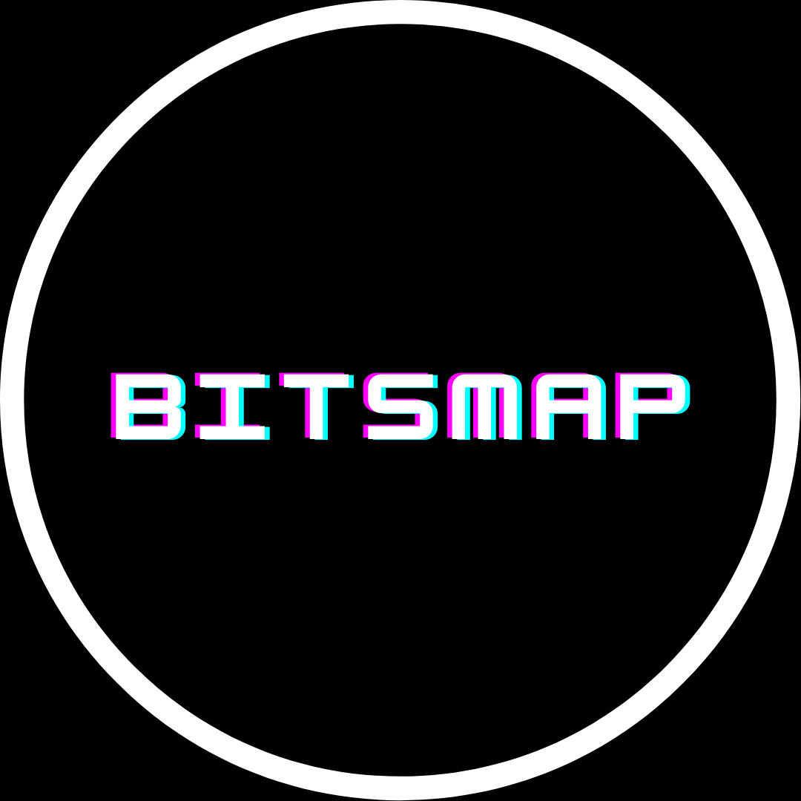

Canais para começar a criar seus próprios jogos
Quer criar seus próprios jogos mas não sabe por onde começar? Então esse artigo é feito pra você! Descubra agora que qualquer um pode criar um grande jogo!
Peixe Babel

Começando com meu canal favorito do YouTube. Apesar de falar mais sobre conceitos de computação em geral, tem uma série de vídeos chamado “programando em 10 minutos”, em que a Vivi já fez 2 vídeos programando em Unity, um programando o Pong e um programando um joguinho do Atila. Ambos tem apenas coisas bem básicas, mas é muito bom pra quem está começando.
Universo Discreto

Esse aqui já é um canal com vídeos mais práticos, e mais voltado para quem quer conhecer computação, tem alguns vídeos de divulgação científica como o Peixe Babel, mas ultimamente tem se voltado mais para vídeo aulas sobre programação. Ele tem alguns videos sobre computação gráfica e alguns soltos sobre jogos em geral. Tem 2 vídeos que são particularmente muito bons que são os da história da ID Software, mostrando como eles revolucionaram a indústria.
Brackeys
Talvez o mais completo de todos, ensina através de tutoriais os mais diversos modos de se criar um jogo, mas é tudo em Unity. Ele lançou seu último vídeo em 24 de Setembro de 2020, mas todo o conteúdo continua por lá, desde criar um personagem em primeira ou terceira pessoa, até criar um cenário inteiro, passando por técnicas de iluminação. O único problema é que ele é em inglês, então pra quem não sabe inglês talvez fique um pouco difícil entender.
Blender Guru

Este aqui é pra quem quer se aprofundar na modelagem 3D, ele ensina apenas Blender, mas é uma ferramenta gratuita e que não difere muito das outras. Apesar de não ser voltado especificamente para jogos, ele abrange muita coisa na modelagem 3D e pode ser usado em vários aspectos dos seus jogos.
The Gamer Inside Brasil

Este é um canal que além de notícias sobre o mundo dos jogos, manda as últimas vagas de emprego para quem quiser entrar em alguma empresa já estabelecida, como o mercado brasileiro é bem pequeno ainda é sempre muito bom ter algum lugar que pega essas vagas e coloca todos no mesmo lugar.
Bitsmap
Agora, puxando sardinha para o nosso lado, no meu canal eu falo sobre jogos, mas no sentido mais acadêmico, sobre Ludologia, sobre a história dos jogos, sobre como algumas coisas funcionam. Não tenho nada ensinando a criar jogos de fato, mas são coisas que podem ajudar no processo de criação, nesse sentido o mais indicado seria o meu vídeo sobre engines, qual a melhor engine pra você, este vídeo é do final de 2018, mas a ideia geral das características delas continuam as mesmas.
Caverna Nerd

Este é o canal do Wesley, onde ele fala sobre notícias de jogos, pode não parecer, mas se manter informado sobre a indústria é muito importante quando se está desenvolvendo jogos e o canal tem feito isso muito bem, vídeos curtos(em sua maioria) e com muita informação.
Todas as imagens utilizadas possuem direitos autorais das empresas citadas e não devem ser utilizadas ou reproduzidas por terceiros.